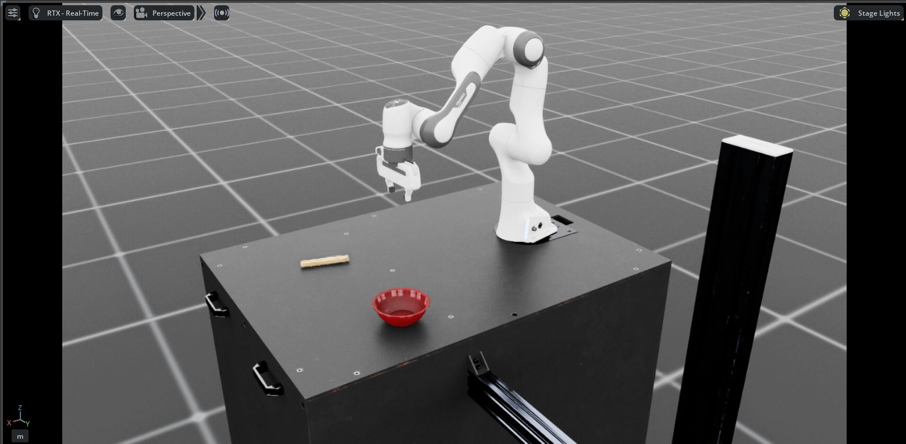

Robot Simulations
Advanced robotic simulations demonstrating cutting-edge teleoperation and control techniques. Features Franka Emika robot arm performing complex manipulation tasks with Vision Pro integration.
Project Overview
This project showcases advanced simulation environments for robotic manipulation and teleoperation. Using state-of-the-art tools and frameworks, we demonstrate real-time control of robotic systems through immersive interfaces including Apple Vision Pro for spatial computing and telepresence applications.
Key Features:
- Franka Emika robot arm teleoperation
- Apple Vision Pro integration for data collection
Demonstration Video: Franka robot arm performing teleoperation with Apple Vision Pro
Technology Stack
The simulation platform leverages industry-standard robotics frameworks and cutting-edge spatial computing technology:
- Robot Platform: Franka Emika Panda robot arm
- Teleoperation Interface: Apple Vision Pro for spatial computing
- Simulation Environment: High-fidelity physics-based simulation
- Control Framework: Isaac lab for task definition and data collection